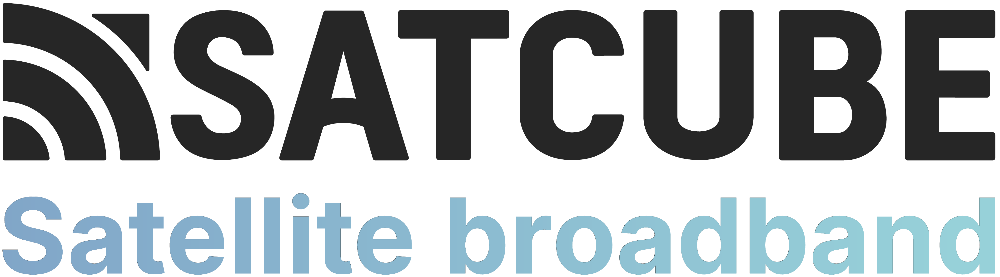
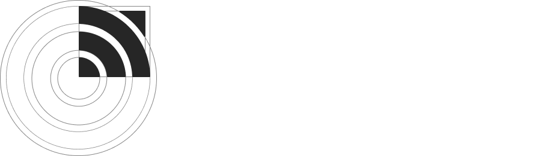
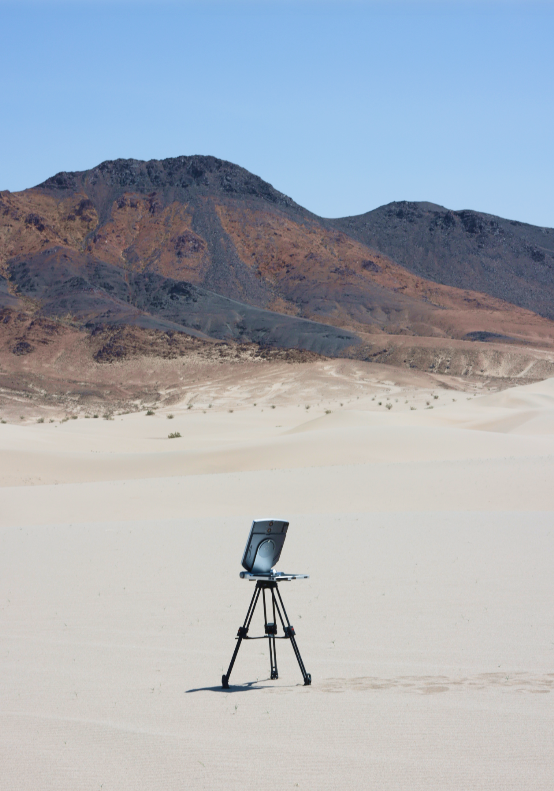
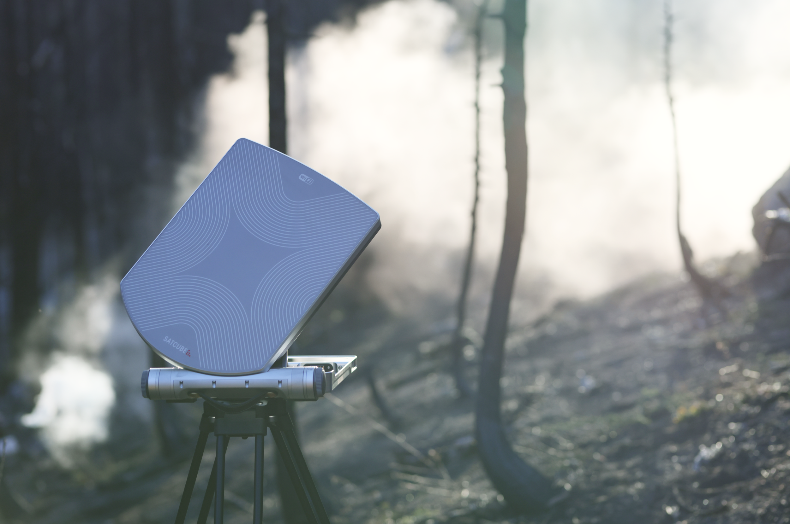
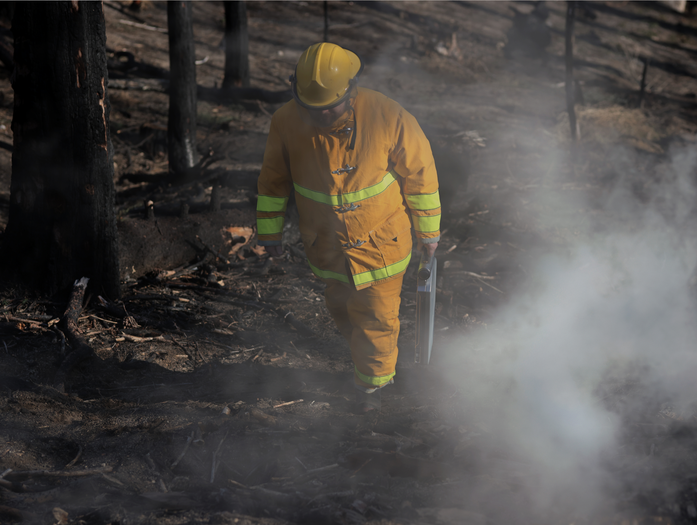

04 · Brand · Satcube
A redesign of a technical and impersonal brand to a warmer, more modern design that feels human in a famously technical field.

The primary Satcube logotype, with its tagline.
The aim was to help Satcube present as a modern, young and innovative company in the otherwise highly technical and, in many cases inaccessible space industry, that makes products that are super-intuitive and accessible to everyone.
Satcube connects the world through portable satellite wifi. I wanted to create a logotype that conveys just that. The initial inspiration for the icon came from the layers of the atmosphere and the way they wrap around the round shape of the earth. This gave the shape of the arches. To connect these round shapes with the name Satcube, the arches were cropped into quarters. To bind the shape together and to symbolise a satellite beaming down to earth, the shape in the top right corner was added.


Greyscale for credibility. Earth and nature for the warmth.
To balance between the high-tech nature of the company and industry, and the company's aim of making accessible, easy to use products for everyone, I chose to keep the base colors of the graphic profile in a grey scale with more exciting accent colors to add an element of interest. This gives a professional yet interesting look that feels young and modern. The accent colors are all inspired by earth and nature.
The brand's images carry its core values: innovation, reliability and user-centricity.
The visual style makes the product feel natural, authentic and meaningful in context. Photos are shot first-hand in real environments, in natural light, with the product placed realistically rather than staged, so the surroundings tell a clear, easy-to-read story.



I started by understanding the landscape, pulled the company into the early thinking, then used structured ideation to push past the obvious first ideas.
Mapping the space industry to find how Satcube could stand out in a field that's often perceived as inaccessible and overly technical.
Sessions with colleagues and stakeholders to pin down what's most important for the company to convey, and how everyone felt about different directions.
A rapid ideation method to generate a large volume of concepts quickly, raw material to refine, or to spark even better ones.